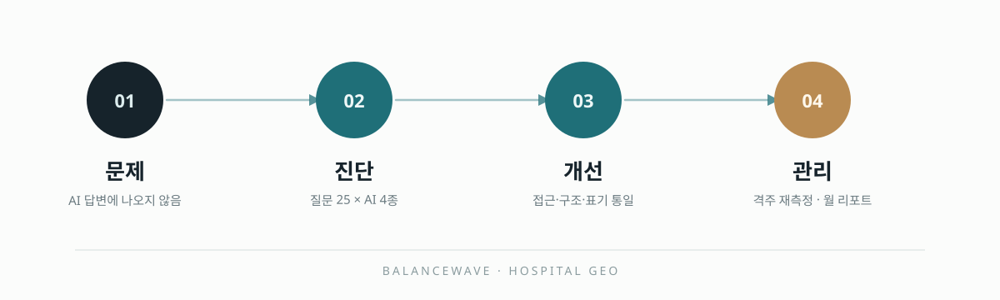

01
자체 도메인
지도·플레이스의 '홈페이지' 칸이 병원이 직접 운영하는 도메인을 가리키는지 봅니다. 블로그나 링크 모음이면 AI가 읽을 1차 출처가 없습니다.
발란스웨이브 · 병원·의원 AI 검색(GEO) 마케팅
원장님 병원이 AI 답변에 나오지 않는 것은 진료를 못해서가 아닙니다. AI가 읽을 수 있는 통로가 없어서입니다. 발란스웨이브는 그 통로를 찾아 고치고, 매달 같은 질문으로 다시 확인합니다.
무엇이 달라졌나
환자는 더 이상 "용산 내과"라고 치지 않고, "신용산역 근처에서 건강검진 되는 내과 추천해줘"라고 묻습니다. 질문이 길고 구체적일수록 AI는 답에 붙일 출처를 고릅니다. 그 출처가 되려면, AI가 읽을 수 있는 문서가 병원 이름으로 있어야 합니다.
| 항목 | 2023년까지 | 2026년 지금 |
|---|---|---|
| 검색어 | 키워드 ("용산 내과") | 질문형 문장 ("건강검진 어디가 좋아?") |
| 노출 방식 | 상위 순위 경쟁 | AI가 신뢰하는 출처를 인용 |
| 매체 전략 | 한 채널에 집중 | 여러 매체의 정보가 일치해야 신뢰 |
| 콘텐츠 | 키워드 반복 | 근거와 경험으로 쓴 글 |
blog.naver.com/robots.txt는 GPTBot·OAI-SearchBot·PerplexityBot·
Google-Extended·ClaudeBot 등 AI 봇 9종 모두에 Disallow: /를 선언하고 있습니다.
병원이 블로그에 쓴 원고는 아무리 많아도 AI 답변의 출처가 될 수 없습니다. 자체 도메인의 1차 출처가 있어야 합니다.
진단 항목
어느 하나만 어긋나도 AI는 병원을 하나의 실체로 확정하지 못합니다. 여섯 항목은 병원에서 직접 확인할 수 있습니다.
01
지도·플레이스의 '홈페이지' 칸이 병원이 직접 운영하는 도메인을 가리키는지 봅니다. 블로그나 링크 모음이면 AI가 읽을 1차 출처가 없습니다.
02
robots.txt에서 검색·인용봇이 본문을 가져갈 수 있는지 확인합니다. 막혀 있으면 어떤 콘텐츠도 전달되지 않습니다.
03
화면이 스크립트로 그려지면 크롤러는 빈 껍데기나 쿠키 인증 스크립트만 받습니다. 사람에게 보이는 글이 AI에게는 없습니다.
04
병원명·진료과·의료진이 기계가 읽는 형태(JSON-LD)로 있는지 봅니다. 없으면 AI는 사실로 확정하지 못합니다.
05
무엇을 먼저 읽으라고 알려 주는 sitemap.xml과 llms.txt가 있는지 확인합니다. 404면 AI는 사이트를 추측으로 해석합니다.
06
이름·주소(층·호수)·전화·진료시간이 채널마다 같은지 봅니다. 다르면 AI는 어느 것도 사실로 확정하지 못합니다.
진행 흐름
한 번 만들고 끝내는 작업이 아닙니다. 같은 질문으로 다시 재고, 달라진 것을 기록하는 것이 끝까지 남는 부분입니다.
01
AI 답변에 병원이 나오지 않습니다. 진료 역량이 아니라 통로의 문제입니다.
02
질문 25개 × AI 4종으로 지금 어디에 나오고 어디에 비어 있는지 기록합니다.
03
크롤러 접근·구조화 데이터·1차 출처·표기 통일을 순서대로 고칩니다.
04
같은 질문으로 격주 재측정. 무엇이 달라졌는지 숫자로 남깁니다.

실제 진단
2026년 11월 19일, 홈페이지·블로그·지도·플레이스의 응답을 직접 받아 확인한 결과입니다. 병원명은 허락 전까지 익명으로 표기합니다.
내과 · 건강검진
홈페이지가 크롤러에게 스크립트 762바이트만 돌려줍니다.
국가건강검진 지정, 비대면진료 시범사업, 외국인 진료까지 갖춘 병원입니다. 그런데 홈페이지에 접속하면 본문 대신 쿠키 인증 스크립트만 나오고, HTTPS로는 열리지 않으며, 구조화 데이터는 0건이었습니다. AI가 읽을 수 있는 것이 없었습니다.
진단 내용 보기 →한의원 · 8개 진료과목
1차 출처가 블로그뿐이고, 그 블로그는 AI에게 닫혀 있습니다.
지도와 플레이스의 '홈페이지' 칸이 모두 네이버 블로그를 가리켰고, 자체 도메인 후보 6개는 모두 DNS 응답이 없었습니다. 그 블로그는 AI 봇 9종에 Disallow: / 를 선언하고 있고, 첫 응답은 제목과 iframe 한 줄뿐인 2,859바이트 껍데기였습니다.
진단 내용 보기 →자사 사례 · 체형 밸런스 스튜디오
사이트 4곳 중 AI가 읽는 곳은 한 곳, 그 한 곳의 이름이 회사와 달랐습니다.
운영 사이트 4곳을 직접 열어 확인했습니다. 한 곳은 첫 응답 본문이 8자였고, 한 곳은 글 0편이었으며, 유일하게 읽히는 사이트는 26,836자를 읽히지만 이름과 구조화 데이터가 다른 사업명으로 되어 있었습니다. 이름은 5종, 전화는 3종, 호수는 2개, 영업시간은 3가지로 갈려 있었습니다.
진단 내용 보기 →진행 단계
1단계는 무료이고, 계약을 전제로 하지 않습니다. 진단 결과를 보고 결정하시면 됩니다.
1단계
5영업일 · 무료질문 25개 설계 → AI 4종에 100회 질의 → 질문별 언급·인용·오류 기록 → 경쟁 병원 비교 → 개선 우선순위 3개.
계약을 전제로 하지 않습니다. 진단 결과를 보고 2단계 진행 여부를 정하시면 됩니다.
2단계
2~5주크롤러 접근 정상화 · HTTPS · robots.txt·sitemap.xml·llms.txt · 구조화 데이터 4종 · 채널 표기 통일 · 구조 페이지와 질문형 FAQ 12편.
병원 홈페이지를 새로 만들지 않고도 진행할 수 있습니다. 다만 쿠키 인증처럼 본문을 가리는 구조는 손대야 합니다.
3단계
매월콘텐츠 8건 발행 · 격주 재측정 · 월 1회 리포트 · 오류 정정 · 기술 상태 점검.
측정 기록은 계약이 끝난 뒤에도 병원에 남습니다.
일하는 방식
성과를 수치로 약속하지 않는 대신, 무엇을 했고 무엇이 달라졌는지를 남깁니다.
확인하지 못한 값은 '확인 불가'로 남기고 추측으로 채우지 않습니다. 제안서의 모든 수치는 직접 응답을 받아 확인한 값입니다.
AI 답변에는 '순위'가 없습니다. 같은 질문을 같은 방식으로 반복 측정해 무엇이 달라졌는지 기록합니다.
플레이스와 블로그 운영은 그대로 두고, AI가 인용하는 영역만 채웁니다.
페이지·원고·측정 기록은 병원 자산입니다. 계약이 끝난 뒤에도 그대로 남습니다.
약속드리는 것은 측정과 기록입니다. 판단은 원장님이 하십니다.
자동 생성 원고가 아니라, 사람을 직접 만나온 경험에서 나온 문장으로 씁니다.
1단계 진단은 무료이고 계약을 전제로 하지 않습니다. 질문 25개를 설계해 AI 4종에 질의하고, 질문별 언급·인용·오류를 표로 드립니다. 결과를 보고 2단계 진행 여부를 정하시면 됩니다.
새로 만든 페이지가 검색과 AI에 반영되기까지 보통 2~4주, 첫 신호는 4~6주입니다. 반영 속도는 AI 모델과 경쟁 병원의 콘텐츠 양에 따라 달라지므로 속도를 약속하지 않고, 대신 같은 질문으로 격주 측정한 기록을 드립니다.
아닙니다. 지금 홈페이지를 그대로 두고 AI가 읽을 수 있는 페이지를 만들어 연결하는 방식으로 진행할 수 있습니다. 다만 쿠키 인증처럼 본문을 가리는 구조는 손대야 합니다. 그대로 두면 어떤 콘텐츠도 AI에게 전달되지 않습니다.
겹치지 않습니다. 플레이스와 블로그 운영을 다른 곳에서 맡고 계셔도 그대로 두고, AI가 인용하는 영역만 채웁니다. 기존에 하던 일을 없애지 않습니다.
검색은 환자만 하는 것이 아닙니다. 보호자와 자녀가 대신 알아보고, 그분들은 AI를 씁니다. AI 답변을 거쳐 오는 분은 이미 내용을 확인하고 오기 때문에 상담이 짧게 끝나는 편입니다. 다만 유입 인원을 수치로 약속하지는 않습니다.
의료법 제56조와 의료광고 심의 기준을 지키는 범위에서만 씁니다. 진료 성과를 약속하는 표현, 환자를 부르는 문구, 질병의 결과를 단정하는 서술은 쓰지 않고, 진료 사실과 준비 사항 중심으로 씁니다.
제작한 페이지와 원고, 측정 기록은 병원 자산으로 남습니다. 계약 기간과 조건은 상담 후 문서로 확정합니다.
어느 질문에 나오고 어느 질문에 안 나오는지 먼저 확인하십시오. 계약을 전제로 하지 않습니다.